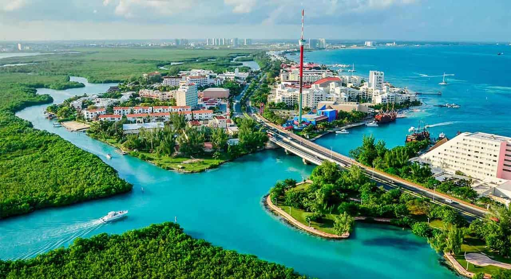
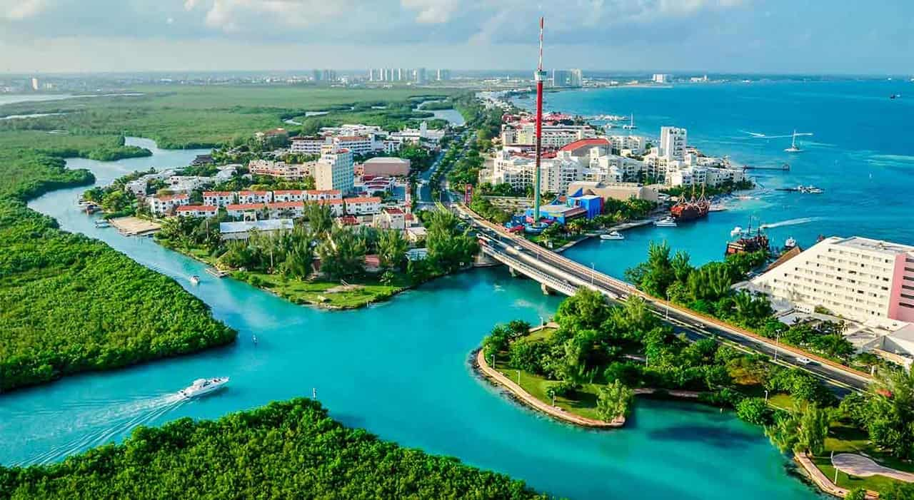

El paraíso de arena blanca y mar turquesa
Cancún es reconocido mundialmente por sus espectaculares playas y su vibrante vida nocturna. Es la puerta de entrada al mundo Maya y ofrece una combinación perfecta de relajación y aventura.
 

¿Qué hacer en Cancún?
- Visitar Playa Delfines (El Mirador).
- Hacer un tour a Isla Mujeres.
- Explorar el Museo Subacuático de Arte (MUSA).
- Disfrutar de la gastronomía local en el Parque de las Palapas.
Ubicación Geográfica
Cancún se localiza en la costa noreste del estado de Quintana Roo, en la Península de Yucatán, México. Sus coordenadas geográficas son 21°09′38″N 86°50′51″O.
Limita al oriente con el Mar Caribe, al norte con el municipio de Isla Mujeres y al oeste con el municipio de Lázaro Cárdenas, formando parte fundamental del corredor turístico denominado Riviera Maya.
A diferencia de otras ciudades coloniales, Cancún fue un Centro Turísticamente Planificado (CIP). En 1969, la zona era una isla desierta habitada solo por unos pocos pescadores.